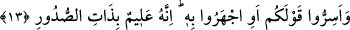

kadının ev işleriyle meşgul olduğu gibi. Böylece hem akıl hem nefis ve hem de ev
düzelmiş olur. Buna karşılık nefis akla gâlip gelecek olursa nefsin bütün çabası kötü
sonuç verir. Tıpkı kocasını emri altına alan kadının durumunda olduğu gibi. Bunun
sonucu olarak da her üçünün durumu bozulur ve kötüye gider.
Şehvete tapan nefsine itâat etme!
Zira her saat başka bir kıbleye yönelir.
Kimin elbisesi temiz de huyu pis ise
Onun cehennemi için anahtara ihtiyaç yoktur.
13. Sözünüzü ister gizleyin, ister açığa vurun; bilin ki O, kalplerin içindekini
bilmektedir.
“Sözünüzü ister gizleyip, ister açığa vurun.” Ey müşrikler, Peygamber (s.a.)
hakkındaki sözlerinizi ister gizleyin isterse ona âşikâr edin…
İbn Abbas (r.anhümâ) der ki: Bu âyet-i kerîme müşrikler hakkında nâzil olmuştur.
Müşrikler kendi aralarında bir takım şeyler konuşuyorlardı. Allah Teâlâ Peygamber
Efendimiz’e onların konuştuklarını haber veriyordu. Bunun üzerine müşriklerden birisi
diğerine “sözünüzü gizli söyleyin ki Muhammed’in Rabbi duyup da ne söylediğinizi ona
haber vermesin” dedi. Bunun üzerine müşrikler hakkında “sözünüzü ister gizleyin, ister
açığa vurun” âyet-i kerîmesi nâzil oldu. İster gizlensin ister açığa vurulsun Allah Teâlâ
bu sözleri mutlaka bilir. Sözlerin gizli olanı ve açığa vurulanı Allah Teâlâ katında,
O’nun ilmi açısından eşittirler.
Bu âyet-i kerîmede yer alan emir, bir mükellefiyet bildirme emri olmayıp tehdid ifâde
etmektedir. Âyette sözün gizlenmesinin açığa vurulmasından önce zikredilmesinin
sebebi, müşrikleri rezil etmek ve ilk başta kaçınmış oldukları şeyin vuku bulduğuna
işâret etmek, ayrıca Allah Teâlâ’nın ilminin bütün mâlûmâtı kuşattığına işâret etmek
içindir. Müşriklerin gizledikleri ve açığa vurdukları, Allah Teâlâ’nın ilmi açısından eşit
olmakla birlikte sanki onların gizlediklerini bilmesi açığa vurduklarını bilmesinden
daha önceliklidir. Çünkü Allah Teâlâ’nın varlıklara dâir olan bilgisi, onların sûretlerini
elde etme yoluyla değildir. Tam tersine her şeyin kendi başına varlığı, Allah Teâlâ’ya
göre ilimdir. Ya da şöyle diyebiliriz: Sır mertebesi, açığa vurma mertebesinden
önceliklidir. Zira açığa vurulan hiç bir şey yoktur ki, bu şey veya onun başlangıcı, kalpte
gizlenmemiş ve çoğunlukla kendisine sırlar taalluk etmemiş olsun. Şu hâlde Allah’ın
ilminin herhangi bir şeyin ilk durumuna bağlanması, onun ikinci durumuna
bağlanmasından daha öncelikli olmuş olur.
“Bilin ki O, kalplerin içindekini bilmektedir.” O, bütün insanların içlerinde